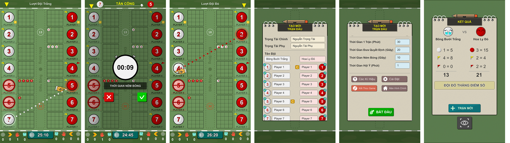

Wiser Ball Score
Ghi điểm, điều khiển trận bóng Wiser ball.
Wiser Ball Score là ứng dụng được tạo ra nhằm mục đích giúp trọng tài hoặc người chơi ghi điểm và điểu khiển một trấn bóng wiserball dễ dàng hơn việc dùng giấy để ghi điểm.
How to Play
Dễ dàng thao tác bằng việc kéo thả để chọn hành động của đội chơi.
Phần mềm tự động đếm giờ và đưa ra kết quả.